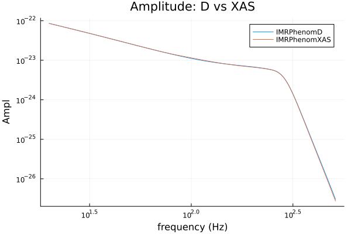
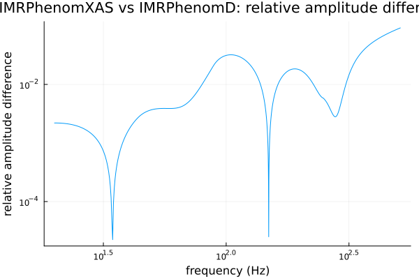
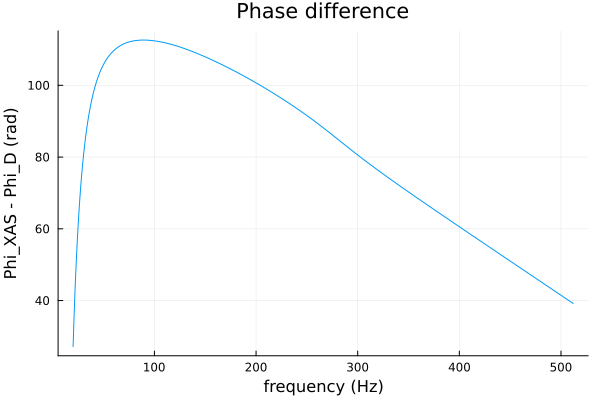

Frequency-Domain Models: IMRPhenomD vs IMRPhenomXAS
IMRPhenomXAS is the successor to IMRPhenomD in the same aligned-spin, (2,2)-mode-only family — a re-tuned phenomenological fit against a larger/more accurate numerical-relativity calibration set (LALSuite's own current recommended aligned-spin default). Both share the exact same call signature in this package (Phi/Ampl over (f, mc, eta, chi1, chi2[, dL])), so switching between them is a one-line change. IMRPhenomXAS's aligned-spin (2,2) mode is also the shared foundation the higher-order-mode (IMRPhenomXHM) and precessing (IMRPhenomXP) models build on — everything from here on in this tutorial series is IMRPhenomXAS underneath.
using GravitationalWaveforms, Plots
gr()
m1, m2 = 36.0, 29.0
mc = (m1 * m2)^(3 / 5) / (m1 + m2)^(1 / 5)
eta = (m1 * m2) / (m1 + m2)^2
chi1, chi2 = 0.2, -0.1 # a bit of aligned spin this time, to exercise the spin-dependent terms
dL = 0.41
validate_phenomxas_params(eta, chi1, chi2; dL=dL) # IMRPhenomXAS's own domain check
f = collect(20.0:0.25:512.0)
phiD = Phi(IMRPhenomD(), f, mc, eta, chi1, chi2)
ampD = Ampl(IMRPhenomD(), f, mc, eta, chi1, chi2, dL)
phiX = Phi(IMRPhenomXAS(), f, mc, eta, chi1, chi2)
ampX = Ampl(IMRPhenomXAS(), f, mc, eta, chi1, chi2, dL)Comparing the two models
Both target the same physical system, so the amplitudes should be nearly indistinguishable on a plot — the interesting comparison is the relative difference, which is where the two models' different NR calibrations actually show up:
plot(f, [ampD ampX]; xscale=:log10, yscale=:log10, label=["IMRPhenomD" "IMRPhenomXAS"],
xlabel="frequency (Hz)", ylabel="Ampl", title="Amplitude: D vs XAS")
rel_diff = @. abs(ampX - ampD) / abs(ampD)
plot(f, rel_diff; xscale=:log10, yscale=:log10, legend=false,
xlabel="frequency (Hz)", ylabel="relative amplitude difference",
title="IMRPhenomXAS vs IMRPhenomD: relative amplitude difference")
The two models agree closely through the inspiral (both share essentially the same PN expansion there) and diverge more through merger/ringdown, where their independently-tuned phenomenological ansätze differ most — exactly where you'd expect two different NR-calibrated fits to disagree, and the reason a newer calibration (IMRPhenomXAS) exists at all. Each model was cross-validated against LALSuite individually (both agree with lalsimulation to a much tighter tolerance than they agree with each other here).
phase_diff = phiX .- phiD
plot(f, phase_diff; xlabel="frequency (Hz)", ylabel="Phi_XAS - Phi_D (rad)", legend=false,
title="Phase difference")
Float32 genericity
Every model in this package is generic over the numeric type of its inputs — pass Float32 parameters and get Float32 output, with no separate code path (this matters for GPU use from GravitationalWaveBayes.jl; see Conventions):
f32 = Float32.(f)
mc32, eta32, chi1_32, chi2_32, dL32 = Float32(mc), Float32(eta), Float32(chi1), Float32(chi2), Float32(dL)
amp32 = Ampl(IMRPhenomXAS(), f32, mc32, eta32, chi1_32, chi2_32, dL32)
eltype(amp32)Float32The Float32 result should agree with the Float64 one closely but not exactly — it's a genuinely different, lower-precision computation propagated through the whole phenomenological fit, not just a cast of the Float64 answer, so expect an accumulated relative error somewhat looser than Float32's own ~1e-7 epsilon:
maximum(abs.(Float64.(amp32) .- ampX) ./ abs.(ampX))4.997706161541212e-5Next: the Higher-Order Modes tutorial moves beyond the (2,2)-only approximation to IMRPhenomXHM, which adds the (2,1),(3,3),(3,2),(4,4) subdominant harmonics on top of this same IMRPhenomXAS (2,2) foundation.
This page was generated using Literate.jl.